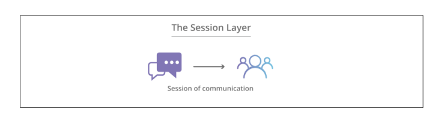

Source : gerbangdesa.com/mengenal-osi-model-dan-tcp-ipmodel-pada-jaringan/
-
Tujuan Pembelajaran
Setelah mempelajari modul ini, peserta didik diharapkan dapat:
-
Menjelaskan pengertian model OSI dan TCP/IP.
-
Menyebutkan dan menjelaskan masing-masing lapisan pada model OSI dan TCP/IP.
-
Mengidentifikasi perbedaan antara model OSI dan TCP/IP.
-
Memberikan contoh protokol yang digunakan dalam masing-masing model.
-
Mengilustrasikan proses komunikasi data berdasarkan model OSI dan TCP/IP.
-
-
Gambar TCP/IP MODEL dan OSI MODEL
Gambar Perbedaan OSI Model dan TCP/IP Model
-
Pengertian OSI Model
OSI singkatan dari Open System Interconnection adalah model referensi yang menggambarkan bagaimana informasi dari aplikasi perangkat lunak di satu komputer bergerak melalui media fisik ke aplikasi perangkat lunak di komputer lain. OSI model mencirikan fungsi komputasi menjadi seperangkat aturan dan persyaratan universal untuk mendukung introperabilitas antara produk dan perangkat lunak yang berbeda.
Dalam bahasa yang lebih sederhana, OSI Model menyediakan standar untuk sistem komputer yang berbeda untuk dapat berkomunikasi satu sama lain.
OSI Model dikembangkan oleh International Organization for Standardization (ISO) pada tahun 1984, dan sekarang dianggap sebagai model arsitektur untuk komunikasi antar komputer.
OSI Model membagi seluruh tugas menjadi tujuh tugas yang lebih kecil agar mudah dikelola. Ketujuh tugas tersebut diperankan oleh 7 lapisan (layer), sehingga masing-masing lapisan akan bertanggungjawab pada satu tugas tertentu dengan tetap menjalin komunikasi dengan lapisan di atasnya dan di bawahnya.
Setiap layer bersifat mandiri, sehingga tugas yang diberikan ke setiap lapisan dapat dilakukan secara independen.
-
Karakteristik OSI Model
Model OSI dibagi menjadi dau lapisan: lapisan atas (upper layer)dan lapisan bawah (lower layer).
Lapisan atau OSI model umumnya beerhubungan dengan masalah terkait aplikasi, dan hanya diimplementasikan dalam perangkat lunak.
Lapisan aplikasi paling dekat dengan pengguna akhir. Baik pengguna akhir dan lapisan aplikasi berinteraksi dengan aplikasi perangkat lunak. Lapisan atas mengacu pada lapisan tepat di atas lapisan lain.
Lapisan bawah Model OSI menangani maslaah transportasi data. Data link layer dan physical layer diimplementasikan dalam perangkat keras dan perangkat lunak.
Physical layer adalah lapisan terendah dari model OSI dan paling dekat dengan media fisik. Lapisan ini bertanggung jawab untuk menempatkan informasi pada media fisik.
-
Lapisan-lapisan pada OSI Model
OSI Model terbagi atas 7 lapisan. Setiap lapisan memiliki fungsi yang berbeda. Ketujuh lapisan tersebut diurutkan dari bawah ke atas sebagai berikut:
-
Physical Layer
-
Data-Link Layer
-
Network Layer
-
Transport Layer
-
Session Layer
-
Presentation Layer
-
Application Layer
-
Physical layer
Lapisan paling bawah dari model OSI adalah Physical layer.
Lapisan ini berisi informasi dalam bentuk bit dan bertanggung jawab untuk mentransmisikan bit satuan dari satu node ke node berikutnya.
Saat menerima data, lapisan ini akan menerima sinyal dan mengubahnya menjadi 0 dan 1 kemudian mengirimkannya ke Data Link Layer, yang bertugas menyatukan kembali menjadi frame.
Fungsi dari Physical layer adalah sebagai berikut:
-
Sinkronisasi bit: Physical layer menyediakan sinkronisasi bit dengan menyediakan jam. Jam ini mengontrol pengirim dan penerima sehingga memberikan sinkronisasi pada tingkat bit.
-
Kontrol laju bit: Lapisan physical layer juga mendefinisikan laju transmisi, yaitu jumlah bit yang dikirim per detik.
-
Topologi fisik: Physical layer juga mendefiinisikan cara di mana perangkat/node yang berada diatur dalam jaringan yaitu topologi bus, star, atau mesh.
-
Mode transmisi: Physical layer juga mendefinisikan cara data mengalir di antara dua perangkat yang terhubung. Berbagai mode transmisi di antaranya Simplex, half-duplex dan full-duplex.
-
-
Data-Link Layer
Data-Link Layer bertanggung jawab atas pengiriman pesan dari node ke node. Fungsi utama dari lapisan ini adalah untuk memastikan trasnfer data bebas dari kesalahan dari satu node ke yang lain, melalui Physical Layer.
Ketika sebuah paket tiba di jaringan, maka menjadi tanggung jawab Data-Link Layer untuk mengirimkannya ke Host menggunakan alamat MAC-nya.
Lapisan data link meliputi dua sub-lapisan tersendiri. Yang pertama, Media Access Control (MAC), menyediakan kendali aliran dan multiplexing untuk transmisi perangkat melalui jaringan. Yang kedua, Logical Link Control (LLC), menyediakan kontrol aliran dan kesalahan atas media fisik serta mengidentifikaasi protokol jalur.
Paket yang diterima dari Network layer dibagi lagi menjadi frame berdasarkan ukuran frame NIC (Network Interface Card). Lapisan ini juga merangkum alamat MAC pengirim dan penerima di header.
Alamat MAC Penerima diperoleh dengan menempatkan permintaan ARP (Address Resolution Protocol) untuk menanyakan siapa pemilik IP tersebut dan host tujuan akan membalas dengan alamat MAC-nya.
Adapun fungsi dari Data Link Layer adalah sebagai berikut:
-
Framing: Framing adalah fungsi dari lapisan Data link. Lapisan Data-link menyediakan cara bagi pengirim untuk mengirimkan satu set bit yang berguna bagi penerima. Informasi dapat dicapai dengan melampirkan pola bit khusus ke awal dan akhir frame.
-
Pengalamatan fisik: Setelah membuat rame, lapisan Data-link menambahkan alamat fisik (alamat MAC) pengirim dan/atau penerima di header setiap frame data.
-
Kontrol kesalahan: Lapisan Data-link menyediakan mekanisme kontrol kesalahan yang mendeteksi dan mentransmisi ulang frame yang rusak atau hilang.
-
Kendali aliran data: Kecepatan data harus konstan di kedua sisi. Jika tidak, data mungkin rusak sehingga kontrol aliran mengoordinasikan jumlah data yang dapat dikirim sebelum menerima pengakuan.
-
Kontrol akses: Ketika satu saluran komunikasi digunakan bersama oleh beberapa perangkat, sub-lapisan MAC dari lapisan data-link membantu menentukan pperangkaat mana yang memiliki kendali atas saluran akses pada waktu tertentu.
-
- Network Layer
-
Routing: Protokol lapisan Network menentukan rute mana yang cocok dari sumber ke tujuan. Fungsi lapisan Network ini dikenal sebagai routing.
-
Logical Addressing: Untuk mengidentifikasi setiap perangkat di internetwork secara unik, INetwork layer mendefinisikan skema pengalamatan. Alamat IP pengirim & penerima ditempatkan di header. Alamat seperti itu membedakan setiap perangkat secara unik dan universal.
-
Transport Layer
Transport layer menyediakan layanan ke Application layer dan mengambil layanan dari Network Layer Data di lapisan transport disebut sebagai segmen.
Lapisan ini bertanggung jawab atas pengiriman pesan secara end to end. Lapisan transport juga memberikan pengakuan atas transmisi data yang berhasil dan mentransmisikan ulang data jika ditemukan kesalahan.
Di sisi pengirim, lapisan transport menerima data yang diformat dari lapisan atas, melakukan segmentasi, dan juga menerapkan kontrol aliran dan kesalahan untuk memastikan transmisi data yang tepat. Selain itu juga lapisan transport menambahkan nomor port sumber dan tujuan di headernya dan meneruskan data yang tersegmentasi ke Network layer.
Umumnya, nomor port tujuan ini dikonfigurasi, baik secara default ataupun manual. Misalnya, ketika aplikasi web membuat permintaan ke server web, biasanya menggunakan nomor port 80, karena ini adalah port default yang ditetapkan untuk aplikasi web. Banyak aplikasi memiliki port default yang ditetapkan.
Di sisi penerima, lapisan transport atau Transport Layer membaca nomor port dari headernya dan meneruskan data yang telah diterimanya ke aplikasi masing-masing. Lapisan ini juga melakukan pengurutan dan pemasangan kembali data yang tersegmentasi.
Fungsi dari Transport layer adalah sebagai berikut
-
Segmentasi dan Reassembly: Lapisan ini menerima pesan dari lapisan (sesi), dan memecah pesan menjadi unit-unit yang lebih kecil. Setiap segmen yang dihasilkan memiliki header yang terkait dengannya. Lapisan transport di stasiun tujuan menyusun kembali pesan.
-
Service Point Addressing: Untuk mengirimkan pesan ke proses yang benar, header lapisan transport menyertakan jenis alamat yang disebut Service Point Addressing atau alamat port. Jadi dengan menentukan alamat ini, lapisan transport memastikan bahwa pesan dikirim ke proses yang benar.
-
-
Session Layer

Session layer bertanggung jawab untuk pembentukan koneksi, pemeliharaan sesi, otentikasi, dan juga memastikan keamanan.
Fungsi dari lapisan ini adalah:
-
Pembentukan sesi, pemeliharaan, dan penghentian: Session layer memungkinkan dua proses untuk membuat, menggunakan, dan mengakhiri koneksi.
-
Sinkronisasi: Lapisan ini memungkinkan proses untuk menambahkan pos pemeriksaan yang dianggap sebagai titik sinkronisasi ke dalam data. Titik sinkronisasi ini membantu mengidentifikasi kesalahan sehingga data disinkronkan ulang dengan benar, dan ujung pesan tidak terpotong sebelum waktunya dan dapat menghindar adanya kehilangan data.
-
Dialog Controller: Lapisan sesi memungkinkan dua sistem untuk memulai komunikasi satu sama lain dalam half-duplex atau full-duplex.
-
-
Presentation Layer
Presentation layer biasa juga disebut Translation Layer. Data dari Application layer diekstraksi di sini dan dimanipulasi sesuai format yang diperlukan untuk dikrim melalui jaringan.
Fungsi dari lapisan ini adalah:
-
Translasi: Misalnya, ASCH ke EBCDIC.
-
Enkripsi/Deskripsi: Enkripsi data menerjemahkan data ke dalam bentuk atau kode lain. Data terenkripsi dikenal sebagai ciphertext dan data yang didekripsi dikenal sebagai teks biasa. Nilai kunci digunakan untuk mengenkripsi serta mendeskripsi data.
-
Kompresi: Mengurangi jumlah bit yang perlu ditransmisikan pada jaringan.
-
-
Application Layer
Di bagian paling atas dari lapisan OSI Model, kita dapat menemukan Application Layer yang diimplementasikan oleh aplikasi jaringan.
Aplikasi ini menghasilkan data yang harus ditransfer melalui jaringan. Lapisan ini juga berfungsi sebagai jendela bagi layanan aplikasi untuk mengakses jaringan dan untuk menampilkan informasi yang diterima kepada pengguna.
Dalam jaringan komputer, terdapat 2 model utama yang menjadi standar agar masing-masing perangkat komputer dapat saling terhubung. Model pada jaringan komputer yang menjadi standar agar komunikasi antar perangkat dapat berjalan dengan baik adalah OSI Model dan TCP/IP.
Network layer berfungsi untuk transmisi data dari satu host ke host lain yang terletak di jaringan yang berbeda.
Lapisan ini juga menangani perutean paket yaitu pemilihan jalur terpendek untuk mengirimkan paket dari jumlah rute yang tersedia. Alamat IP pengirim & penerima ditempatkan di header oleh Network layer.
Fungsi dari lapisan Network adalah:
Cara kerja Jaringan pada OSI Model
Agar informasi yang dapat dibaca manusia bisa ditransfer melalui jaringan dari satu perangkat ke perangkat lain, data harus melewati tujuh lapisan OSI Model pada perangkat pengirim dan kemudian naik ke tujuh lapisan di ujung penerima.
Misalnya: Rusdi ingin mengirim email ke Budi. Rusdi menulis pesannya dalam aplikasi email di laptopnya dan kemudian menekan tombol 'Send'.
Aplikasi emailnya akan meneruskan pesan tersebut ke Application layer, guna memilih protokol (SMTP) dan meneruskan data ke Presentation layer. Presentation layer yang bertugas memulai sesi komunikasi.
Data tersebuit kemudian akan mengenai Transport layer pengirim untuk dilakukan segmentasi. Segmen-segmen tersebut akan dipecah menjadi paket-paket pada Network layer, yang selanjutnya akan dipecah lebih jauh lagi menjadi frame-frame pada Data link layer.
Data link layer kemudian akan mengirimkan frame tersebut ke Physical layer, guna mengubah data menjadi bitstream 1 dan 0 dan mengirimkannya melalui media fisik, seperti kabel.
Setelah komputer Budi menerima aliran bit melalui media fisik (seperti wifi), data akan mengalir melalui rangkaian lapisan yang sama pada perangkatnya, tetapi dalam urutan yang berlawanan.
Pertama Physical layer akan mengubah bitstream dari 1 dan 0 menjadi frame yang diteruskan ke Data link layer. Layer tersebut kemudian akan menyusun kembali frame-frame tersebut menjadi beberapa paket untuk Network layer.
Network layer kemudian akan membuat segmen keluar dari paket untuk menuju Transprt layer, guna merakit kembali segmen menjadi satu bagian data.
Data kemudian akan mengalir ke Session layer milik penerima (Wati), untuk meneruskan data ke Presentation layer dan kemudian mengakhiri sesi komunikasi.
Presentation layer kemudian akan menghapus kompresi dan meneruskan data mentah ke Application layer. Setelah itu, Application layer akan memasukkan data yang dapat dibaca manusia ke perangkat lunak email milik Budi, sehingga dapat membaca pesan email dari Rusdi di layar laptop atau komputernya.